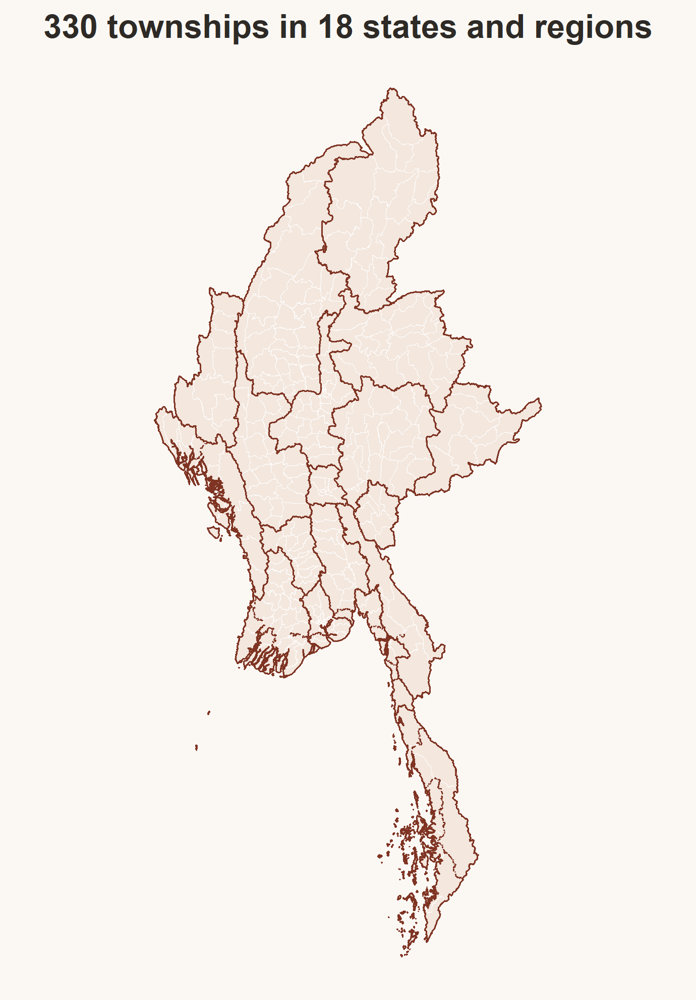
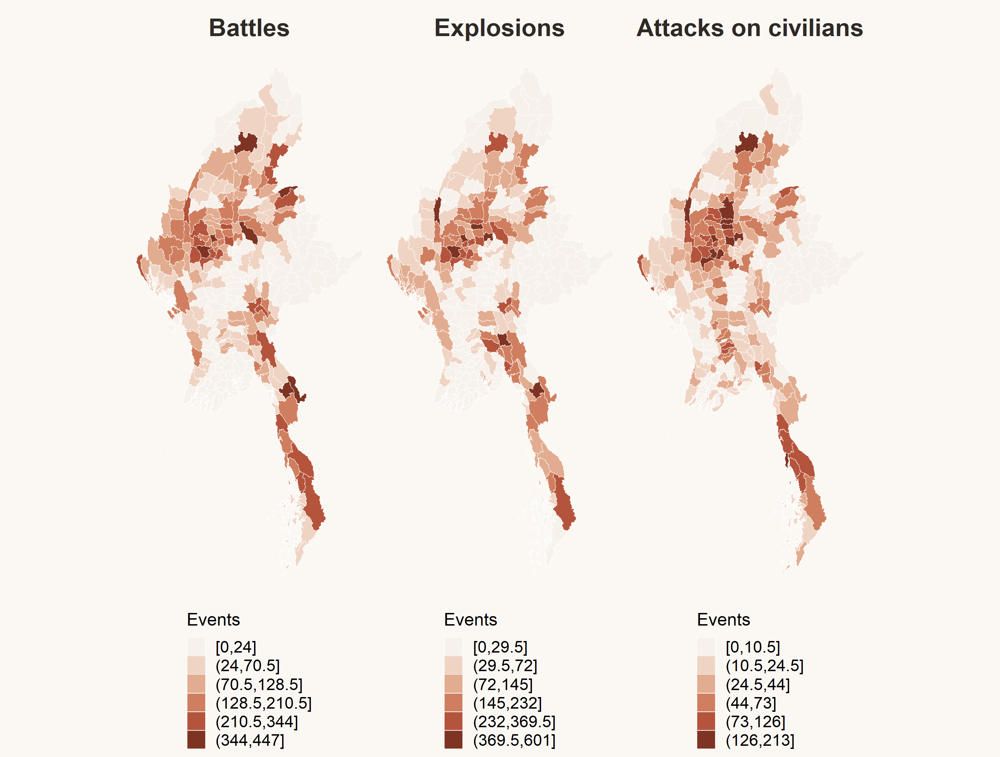
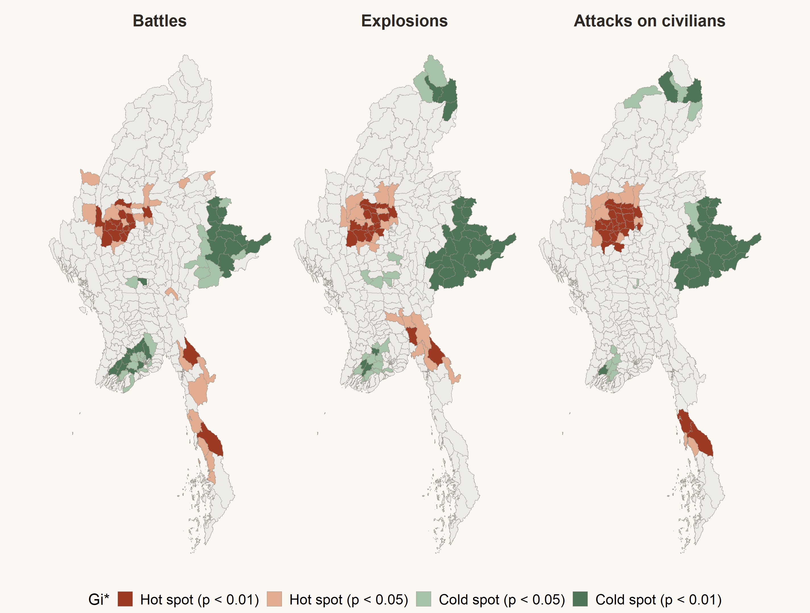
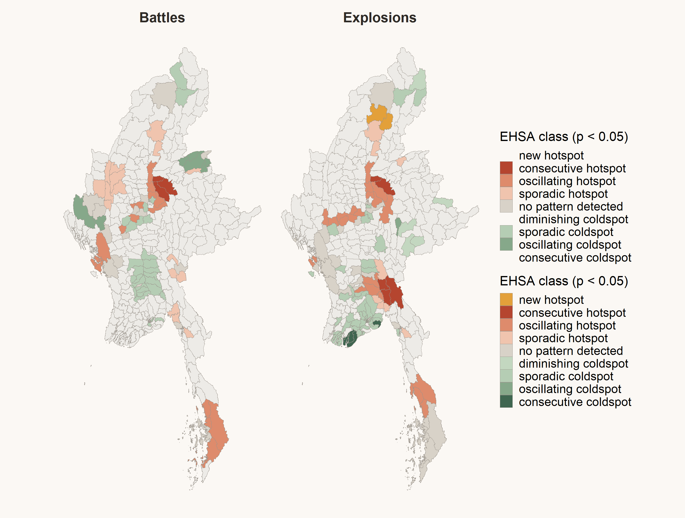
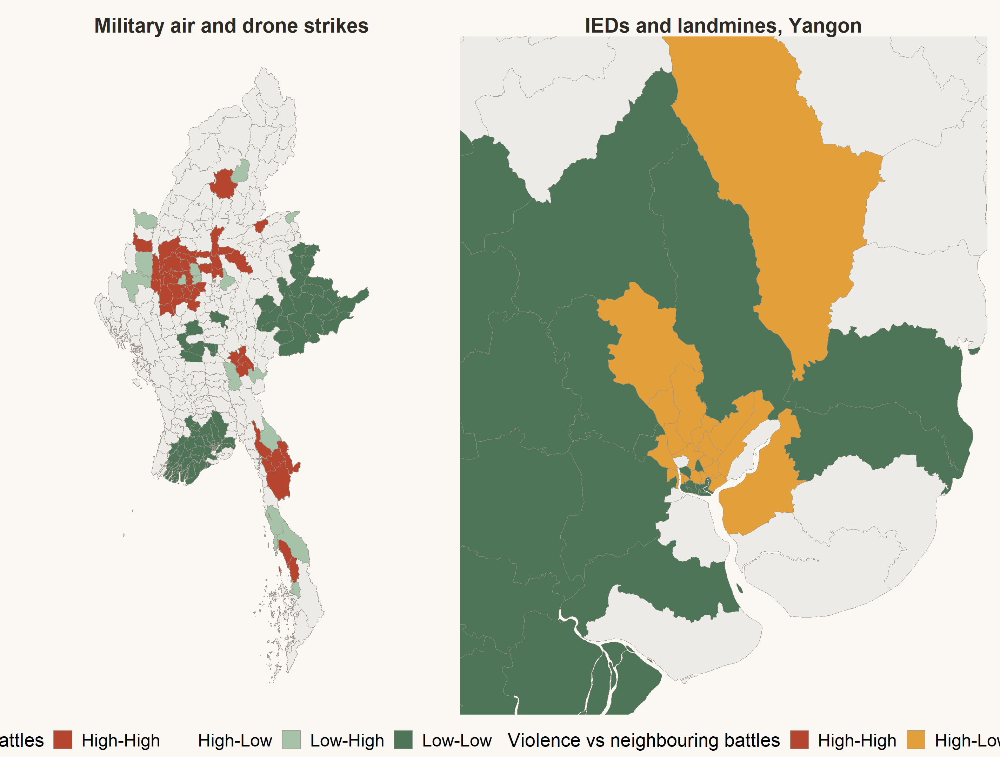

Executive summary of Take-home Exercise 2, armed conflict by township, January 2021 to September 2025
2026-10-27
Myanmar’s military seized power in February 2021. Peaceful protest turned into armed resistance, and the country has since split into areas held by the military, ethnic armed organisations and People’s Defence Forces.
ACLED recorded 53,907 battles, explosions and attacks on civilians that can be placed in a township between January 2021 and September 2025.
Where does armed conflict cluster across Myanmar’s 330 townships, how have those clusters shifted over 19 quarters, and where does violence happen away from the front line?
Objectives

| Item | Detail |
|---|---|
| Events | ACLED Myanmar, 87,109 records, 53,907 kept |
| Boundaries | MIMU township boundaries v9.4, 330 townships |
| Variables | Battles (21,069), Explosions/Remote violence (22,899), Violence against civilians (9,939) |
| Unit | Township by quarter, 19 quarters, 6,270 cells |
| CRS | WGS 84 / UTM zone 47N (EPSG 32647) |
Cleaning decisions
1. Prepare
Spatial join of events to townships, counts by type, and a space-time cube of 330 townships by 19 quarters
›
2. LMSA
Global Moran’s I, Local Moran’s I and Getis-Ord Gi* on totals for 2021 to 2025, with 999 permutations
›
3. EHSA
Spatio-temporal Gi* for every quarter, then a Mann-Kendall test to classify each township’s trend
›
4. Value added
Bivariate Local Moran’s I comparing violence in a township with battles in its neighbourhood
Key parameters
Checks that changed results

4,871 and 5,349
battles and explosion events in Sagaing, the most of any region
2023 Q4
national peak, with 1,649 battles and 1,923 explosion events as Operation 1027 began



Bivariate LISA compares violence in each township with battles in the townships around it.
Reporting gaps ACLED depends on media and partner reports. Remote areas under internet shutdown may look colder than they are.
Location precision About 45% of events are placed at a town point, which inflates townships that contain district towns, such as Hpapun and Monywa.
Unit size Yangon’s 45 small townships and large rural townships count as equal units. Counts are not adjusted for area or population.
Multiple testing 330 tests per map at p < 0.05. After FDR correction the cluster cores remain, but edge townships may be false positives.
Trend test A single Mann-Kendall test over 19 quarters gives a weak trend for a township whose violence rose and then fell.
Co-location only The bivariate result shows where violence types meet. It cannot show that one caused the other.
Plan long term in the Dry Zone Sagaing, Magway and Mandalay carry the heaviest load of all three types and have been hot for close to five years. Access and protection need multi-year planning there.
Early warning where violence is arriving Hpakant and Mogaung, the ring around Mandalay, the Mandalay to Lashio road and the Rakhine and Tanintharyi coasts need contingency stocks and evacuation plans.
Watch ceasefire areas closely Border townships of northern Shan cooled quickly after the ceasefire, but they swung between hot and cold before, so the gain is fragile.
Protect civilians in cold cities Yangon faces bombings, killings and arrests without a front line. Legal aid, documentation and safe reporting matter more there than front-line relief.
Full methods, code and diagnostics are in the Technical Report.
ISSS624 Geospatial Analytics · Take-home Exercise 2